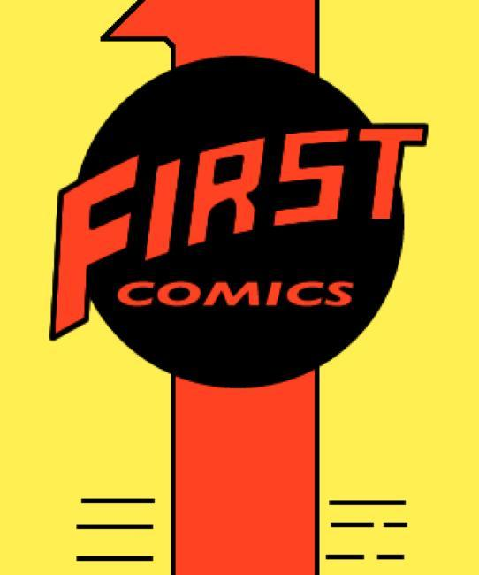

First Comics was an American comic-book publisher that was active from 1983 to 1991, known for titles like American Flagg!, Grimjack, Nexus, Badger, Dreadstar, and Jon Sable. Along with competitors like Pacific Comics and Eclipse Comics, First took early advantage of the growing direct market, attracting a number of writers and artists from DC and Marvel to produce creator-owned titles, which, as they were not subject to the Comics Code, were free to feature more mature content.
Based in Evanston, Illinois, First Comics was co-founded by Ken F. Levin[5] and Mike Gold. It launched in 1983 with a line-up of creators including Frank Brunner, Mike Grell, Howard Chaykin, Joe Staton, Steven Grant, Timothy Truman, and Jim Starlin. In 1984, First acquired all the titles of the short-lived publisher Capital Comics, including Mike Baron's action/superhero/fantasy/comedy series Badger, and Baron and Steve Rude's space-superhero series Nexus.
Among First's best-known titles were Chaykin's satirical futuristic cop series American Flagg; John Ostrander and Tim Truman's Grimjack; Baron & Rude's Nexus; Badger; Jim Starlin's space opera series Dreadstar and Mike Grell's Jon Sable, which was briefly adapted for TV.
Titles
Alter Ego (4 issues)
American Flagg! (50 issues, plus special, then 12 issue series)
Badger (1985)
Corum (Michael Moorcock adaptation):
The Chronicles of Corum (12 issues, 1987-1988)
The Bull and the Spear (4 issues, 1989)
Classics Illustrated (27 issues)
Crossroads (5 issues)
Dreadstar (from Epic Comics, 38 issues)
Dynamo Joe (15 issues, plus 1 special)
Elric (Michael Moorcock adaptation):
Sailor on the Seas of Fate (7 issues, 1985-1986)
Elric of Melnibone (1 issue, 1986)
Weird of the White Wolf (5 issues, 1986-1987)
The Vanishing Tower (6 issues, 1987-1988)
The Bane of the Black Sword (6 issues, 1988)
E-Man (from Charlton Comics, 25 issues then goes to Comico)
The Enchanted Apples of Oz
Evangeline (from Comico, 12 issues)
First Adventures (5 issues, anthology series featuring Whisper, Blaze Barlow, and Dynamo Joe)
First Graphic Novel, anthology series featuring Nexus, Oz, Teenage Mutant Ninja Turtles, and others
The Gift (one-shot)
Grimjack (81 issues, plus a limited series and a graphic novel)
Hammer of God: Sword of Justice (2 issue mini-series, tie-in with Nexus)
Hawkmoon (Michael Moorcock adaptation):
The Jewel in the Skull (4 issue mini-series, 1986)
The Mad God's Amulet (4 issue mini-series, 1987)
The Sword of Dawn (4 issue mini-series, 1987)
The Runestaff (4 issue mini-series, 1988)
Inspector Oh (regular series, 2016)
Jon Sable, Freelance (56 issues)
Mike Grell's Jon Sable (10 issues)
Lone Wolf and Cub (45 issues)
Love Town (regular series, 2018)
Mars (12 issues)
Mazinger (graphic novel)
Meta-4 (3 issues)
Munden's Bar (2 specials)
Nexus (80 issues, plus several limited series)
Original E-Man & Michael Mauser (7 issues)
The P.I.s (3 issues)
Psychoblast (9 issues)
Sable (27 issues)
Sensei (4 issues)
Serving Supes (ongoing)
Shatter (1985)
Starslayer (1983)
Squalor (4 issues)
Team Yankee (6 issues, followed by graphic novel)
Time Beavers (graphic novel)
Time² (two graphic novels)
Twilight Man (4 issues)
Warp (19 issues, plus 3 specials)
Whisper (37 issues, plus a special)
Zen: Hard Bounty (6 issues)
Zen: Home (one-shot)
Zero Tolerance (4 issues)